MP3プレイヤー
GUIプログラミング
20FI033 久保 宥斗
プログラムの仕様
音声データであるMP3を読み込み、音楽の再生や一時停止が可能である。また、その他にもシークバーの使用で途中からの再生、音量バーの使用で音量を調節することが可能である。(図1)
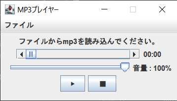
図 1 MP3プレイヤー 起動時画面
プログラムの開発
当初、JavaFXでのWEBブラウザや動画ビューワーといった実用的に使えるGUIソフトの作成を考えていた。しかし、SwingよりJavaFXと呼ばれるGUIライブラリのほうがよりできることが多いため、Swingの使用が無くなってしまうことがある。また、授業で学んだSwingの内容を使用せずに作成することも可能になる。特に、Webブラウザの場合は、SwingにはなかったJavaFXのWebViewオブジェクトを使うことで簡単に実装することができ、Swingを使用しないことになる。Swingを使用せずにソフトを作成してしまうと、今回の授業で学んだことを活かすことがなくなると判断したため、自由課題ではSwingを絶対に使用するという趣旨の下、作成をしようと考えた。そこで、Swingが使えるかつ実用的なGUIソフトの作成ができるソフトとして、音楽再生ソフトの作成に決定した。MP3などの音楽ファイルの再生のライブラリは、標準ライブラリには搭載していないため外部ライブラリを使用し、GUI部分はSwingを使用する。これにより、授業で学んだことを活かしつつ応用したプログラムを作成することが考えられる。
プログラムの操作方法
1. 音楽ファイルの開き方
1.1 メニューバーのファイルから「ファイルを開く」をクリックする。(図2)
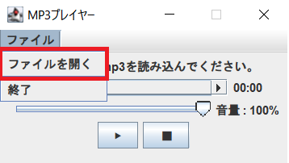
図 2 ファイルを開く
1.2 MP3ファイルを選択し、「開く」をクリックする。(図3)
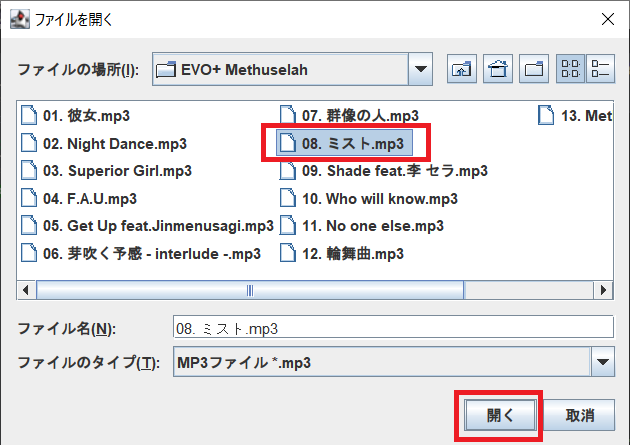
図 3 ファイルの選択
1.3 音楽が再生される。(図4)
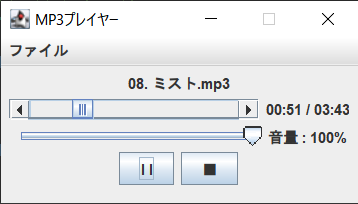
図 4 音楽再生中
2. 一時停止
2
2.1 音楽の再生中に「Ⅱ」の一時停止ボタンをクリックすると、音楽が一時停止される。(図5)
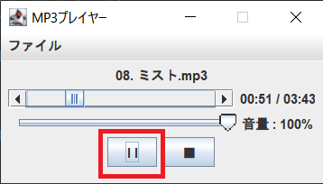
図 5 一時停止ボタン
2.2 再度、再生する場合は「▶」の再生ボタンをクリックする。(図6)
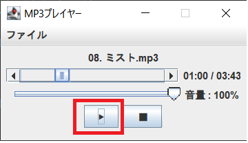
図 6 再生ボタン
3. 停止
3
「■」の停止ボタンをクリックすると、再生時間の位置に停止が表示され音楽が停止になる。(図7)
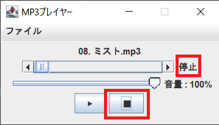
図 7 停止ボタン
4. シークバー
再生時間の左にあるシークバーを好きな位置にドラックすると、巻き戻しや早送りをすることが可能。(図8,9)
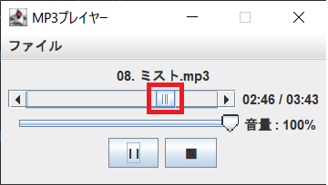 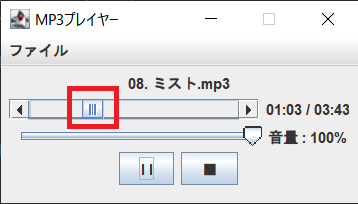
図 8 巻き戻し前 図 9 巻き戻し後
5. 音量調整
音量の左にあるスライダーを好きな位置にドラックすると、音量を縮小、拡大をすることが可能。(図10,11)
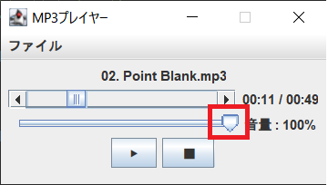 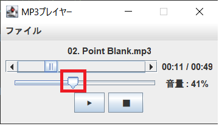
図 10 音量縮小前 (デフォルトの100%) 図 11 音量縮小後
6. 終了
4
5
6
6.1 メニューバーのファイルから「終了」をクリックする。(図12)
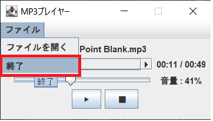
図 12 終了ボタン
6.2 「アプリケーションを終了してもよろしいですか？」が表示されるので、「はい」をクリックする。(図13)
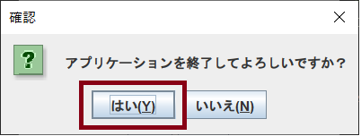
図 13 終了の確認
6.3 プログラムが終了する。
プログラムのポイントや工夫点
l音楽の再生や停止だけではなく、シークバーの実装や音量スライダーの実装を行った点 (4.シークバー, 5.音量調整)
l 音楽の一時停止を可能にし、一時停止の際に「II」が「▶」に変わる点 (2.一時停止)
l Swingを使用し、JavaFXを使用しなかった点
l 再生ボタンや停止ボタンをわかりやすくするため、文字ではなく記号を使用した点 (2.一時停止, 3.停止)
l 再生の停止時に「0:00」ではなく、「停止」と表示わかりやすくした点 (3.停止)
l プログラムを終了する際に、確認画面を表示した点 (6.終了)
追加のライブラリ
BasicPlayer API 3.0
概要 : JavaSoundAPIに基づいてスレッド化された、単純な機能を持つAPI。MP3などのオーディオファイルを再生することが可能。
ダウンロードURL
: https://web.archive.org/web/20200220153148/http://www.javazoom.net/jlgui/api.html
設定 : lib(ライブラリ)フォルダを作成し、クラスパスにbasicplayer3.0.jar、commons-logging-api.jar、jl1.0.jar、jogg-0.0.7.jar、jorbis-0.0.15.jar、jspeex0.9.7.jar、mp3spi1.9.4.jar、tritonus_share.jar、vorbisspi1.0.2.jarのJARを追加し、コードでインポートする。